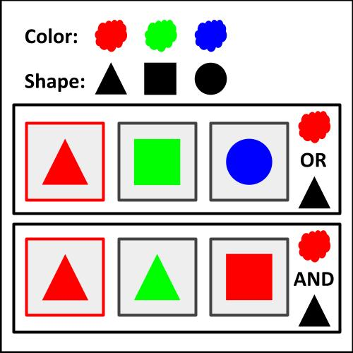
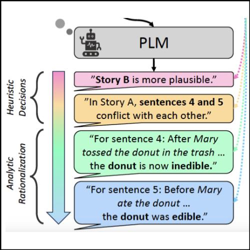

|
Zheyuan "Brian" Zhang I am currently doing a research intern on Embodied AI, supervised by Professor Chuang Gan. I graduated with an MS in Robotics from the Robotics Institute and a Graduate Certificate in Cognitive Science from the Weinberg Institute for Cognitive Science at the University of Michigan. I was a research assistant at the Situated Language and Embodied Dialogue (SLED) lab, advised by Professor Joyce Chai. I was also fortunate to work with Professor Honglak Lee, Professor Freda Shi, Professor Parisa Kordjamshidi. Prior to UMich, I did a BS in Computer Science from UMass Amherst, College of Information & Computer Sciences. |

|
ResearchMy research is centered at the intersection of Artificial Intelligence and Cognitive Science. Currently, I am particularly interested in Embodied AI and Natural Language Processing. I am also planning to explore AI for Science and AI for Psychology in the future. |
News |
Preprints |

|
Do Vision-Language Models Represent Space and How? Evaluating Spatial Frame of Reference Under Ambiguities
Zheyuan Zhang*, Fengyuan Hu*, Jayjun Lee*, Freda Shi, Parisa Kordjamshidi, Joyce Chai, Ziqiao Ma Pluralistic Alignment @ NeurIPS 2024 Project Page | Paper | Code | Dataset |
|  |
A Combinatorial Approach to Neural Emergent Communication
Zheyuan Zhang arXiv, 2024 Paper |
|
COMBO: Compositional World Models for Embodied Multi-Agent Cooperation
Hongxin Zhang*, Zeyuan Wang*, Qiushi Lyu*, Zheyuan Zhang, Sunli Chen, Tianmin Shu, Yilun Du, Chuang Gan arXiv, 2024 Project Page | Paper | Code |
Publications |

|
EILeV: Eliciting In-Context Learning in Vision-Language Models for Videos Through Curated Data Distributional Properties
Keunwoo Peter Yu, Zheyuan Zhang, Fengyuan Hu, Shane Storks, Joyce Chai Conference on Empirical Methods in Natural Language Processing (EMNLP), 2024 Video-Language Models @ NeurIPS 2024 Paper | Code |
|  |
HAR: From Heuristic to Analytic: Cognitively Motivated Strategies for Coherent Physical Commonsense Reasoning
Zheyuan Zhang*, Shane Storks*, Fengyuan Hu, Sungryull Sohn, Moontae Lee, Honglak Lee, Joyce Chai Conference on Empirical Methods in Natural Language Processing (EMNLP), 2023 Paper | Code |

|
Low-cost Solution for Vision-based Robotic Grasping
Zheyuan Zhang, Huiliang Shang International Conference on Networking Systems of AI (INSAI), IEEE Computer Society, 2021 (Second Prize) Paper | Code (110 ) |
Other Projects |

|
Bot Lab: Autonomous Ground Vehicle from Low-level Control, SLAM to Planning and Exploration
Zheyuan Zhang, Yu Zhu, Manu Aatitya Raajan Priyadharshini, Thirumalaesh Ashokkumar ROB 550 (Robotic Systems Laboratory), University of Michigan, 2022 Paper |
Teaching |

|
Graduate Student Instructor (GSI), EECS 492 (Introduction to Artificial Intelligence)
Winter 2024, Fall 2023 Textbook: Artificial Intelligence: A Modern Approach, 4th Edition |
Academic Services
|
Misc
|
|
Source code borrowed from Jon Barron's website. |